← MultiDisplay programvare · Monteringsveiledning
Hvordan du bruker skjermen, hvilke skjermbilder den kan vise, og hvor på oppsettsiden hvert av dem slås på og justeres. Er skjermen ikke satt sammen ennå, se monteringsveiledningen. Trykk på et bilde for å se det større.
Skjermbildene kommer i denne rekkefølgen: Oversikt, Kalender, Månedskalender, Klokke, Spotify og Satellittbilde over Europa. Deretter kommer skjermbildene for hvert sted, i den rekkefølgen stedene står på oppsettsiden. Skjermen husker hvilket skjermbilde du sist trykket deg fram til, også etter en omstart.
Alt stilles inn på http://multidisplay.local/oppsett. Du kan også gå via lenken på navigasjonssiden.
Hvis skjermen har fått et annet navn, bytter du ut multidisplay med det.
Det står «Ulagrede endringer» til du lagrer. Klokkeslett skrives med 24 timer (TT:MM).
Én rad per sted som viser vær, og fire kolonner med seks timers mellomrom. Hver kolonne har værsymbol, temperatur og nedbør for de seks timene. En farget prikk ved stedsnavnet betyr at Meteorologisk institutt har sendt ut farevarsel for stedet. Fargen er gul, oransje eller rød etter hvor alvorlig varselet er.
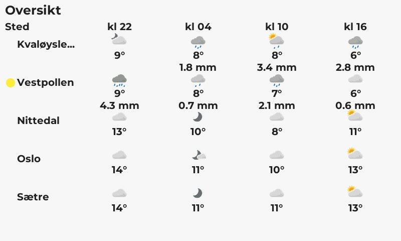
Avtalene de neste to ukene, fra opptil tre kalendere, med én farge per kalender. Den hentes på nytt hvert kvarter.
Det fungerer med Google Kalender (Hemmelig adresse i iCal-format), en publisert Outlook-kalender eller en annen .ics-adresse.
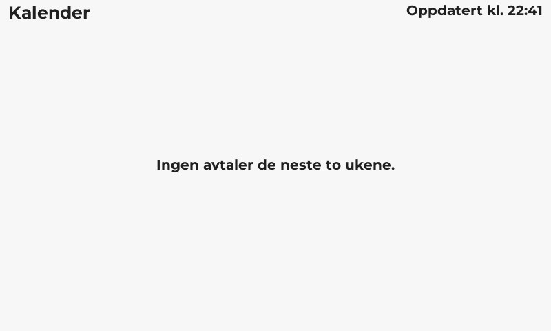
Fem uker fra og med denne uken, med ukenummer. Søndager og helligdager har rød dato, og dagen i dag har ramme rundt. Pilene ved klokken blar fire uker fram eller tilbake. Skjermen går tilbake til denne uken når du forlater den, eller etter fem minutter uten trykk.
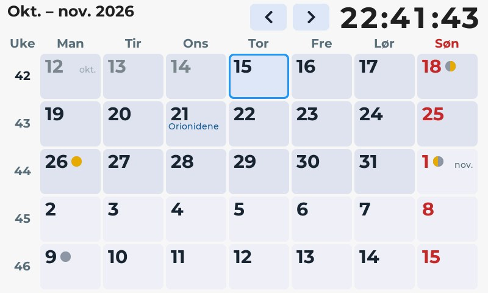
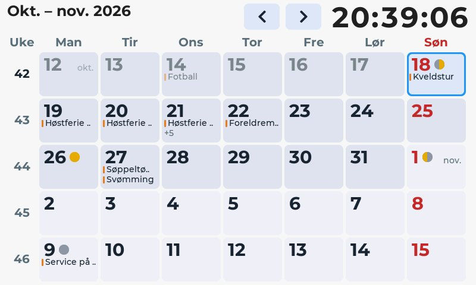
Klokkeslettet med store tall, med sekundene mindre ved siden av. Under står dato og ukenummer, og nederst temperaturen inne i hele grader og ute til nærmeste halve grad.
Temperaturen ute er for stedet du velger i Temperatur ute for, og kommer fra Meteorologisk institutt. Det er deres beregning av temperaturen akkurat nå, rettet etter målinger i nærheten, også fra private værstasjoner som Netatmo. Den hentes hvert tiende minutt. Står det «Ute –», har skjermen ikke fått noe svar den siste halvtimen. Velger du Ingen, vises bare temperaturen inne.
Temperaturen inne måles i selve brikken i skjermen og kan bomme mye, selv når den er justert. Vil du ikke ha den, tar du bort haken ved Vis temperaturen inne.
Temperaturen måles av en sensor i selve brikken bak skjermen. Brikken er varmere enn rommet, omtrent 15 grader, så skjermen trekker fra en justering som du stiller inn én gang. Målingen jevnes ut over omtrent ett minutt. Den kan likevel variere en grad eller så etter hvor mye skjermen har å gjøre.
21,5, og lagre. Justeringen regnes da ut av seg selv.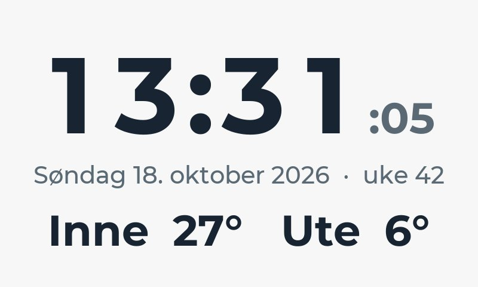
Det som spilles på Spotify-kontoen skjermen er koblet til, med omslaget, tittelen, artistene og albumet, hvor langt sangen har kommet, og hvilken enhet den spilles på. Skjermen spiller ingenting selv, men styrer Spotify på en telefon, PC eller høyttaler. Knappene hopper til forrige eller neste sang og spiller eller pauser. Kan enheten stilles i volum fra andre, er det også knapper for volumet, ti prosent om gangen. Trykk ved siden av knappene bytter skjermbilde som vanlig.
Spilles det ingenting, står det en knapp for hver av kontoens enheter som Spotify kjenner til. Trykk på en for å starte avspillingen der. Enheter vises bare når Spotify-appen nylig har vært åpen på dem.
Styringen krever Spotify Premium. Noen enheter, for eksempel en del TV-er, forsterkere og høyttalere med Chromecast, lar Spotify ikke styres fra andre enn sin egen app. Da er knappene grå, og det står «Spotify lar ikke skjermen styre denne enheten». Skjermen viser likevel hva som spilles.
https://multidisplay.erlandsen.dev/spotify/.Tar du bort haken ved Automatisk bytte kan starte herfra, blir Spotify stående til noen trykker, selv om skjermen ellers ville begynt å bytte. Kommer det automatiske byttet til Spotify fra et annet skjermbilde, fortsetter det som vanlig. Med Alltid mørkt er Spotify-skjermen mørk selv om resten av skjermen har lyst tema.
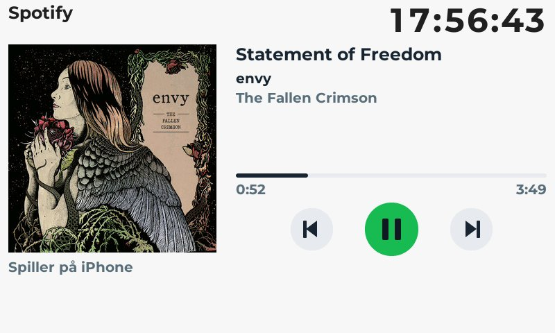
Det siste bildet fra Meteosat over Europa, fra Meteorologisk institutt. Det kommer et nytt bilde hvert kvarter.
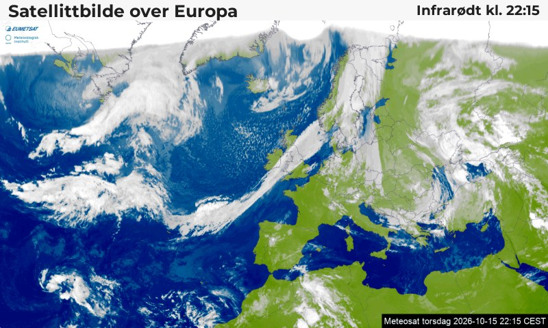
Disse krysses av under hvert sted på oppsettsiden. Hvert av dem har sin egen i automatisk bytte-boks.
Værvarselet fra Yr for de neste to døgnene, med en stor klokke. Øverst står værsymbolene. Diagrammet viser temperatur (oransje) og nedbør (blå søyler), og under det står vindstyrke og vindretning. Natten er skyggelagt. Ved siden av klokken står soloppgang og solnedgang. Når det begynner eller slutter å regne innen halvannen time, står det i stedet for eksempel «Nedbør om 50 min».
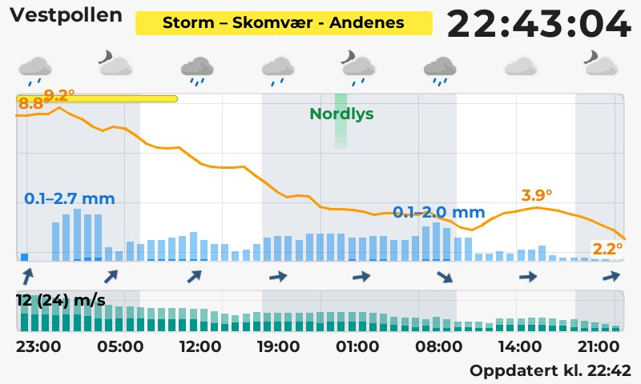
Sju dager fra i dag. Hver dag har symbol midt på dagen, høyeste og laveste temperatur som en søyle (oransje over null, blå under), nedbør og sterkeste vind. Står det «0,4–2,1 mm», er det tallet til høyre så mye det kan bli. Vindkast står i parentes, «5 (12) m/s», for de første par dagene.
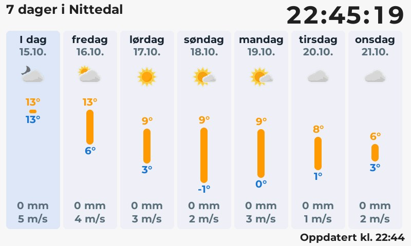
Flyene i lufta rundt stedet, på en radar med nord opp og flyplassene inntegnet. Ved siden av er en tabell over de nærmeste flyene med kallesignal, rute, høyde, fart og avstand. Politi-, rednings- og ambulansefly står som Politi, Redning eller Ambulanse. Posisjonene oppdateres hvert femte sekund mens skjermbildet vises.
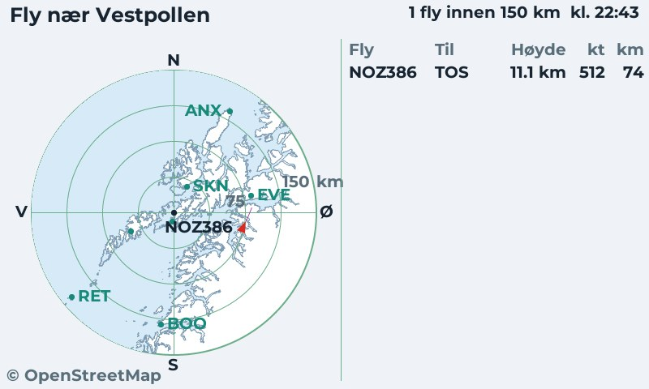
Skipstrafikken rundt stedet fra BarentsWatch. Hvert skip er en markør som peker dit skipet går, med farge etter type (last, tank, passasjer, fiske, fritid, slep). Tabellen viser de nærmeste skipene. Dette dekker bare norske farvann.
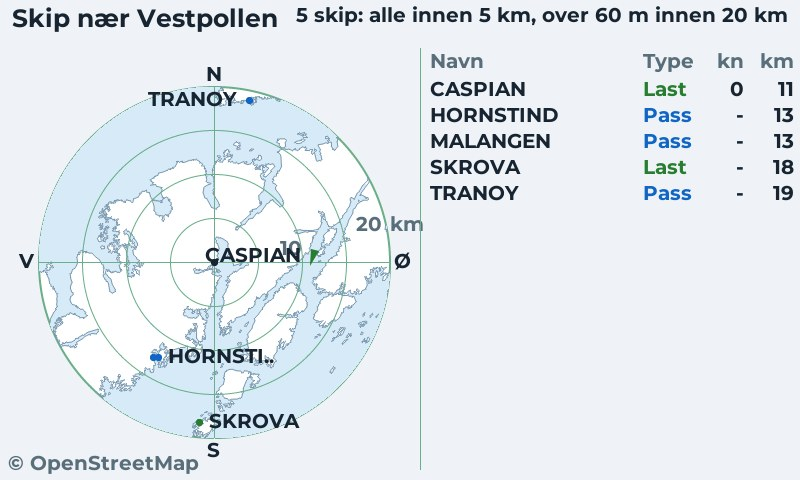
Nedbørradar fra Meteorologisk institutt for området rundt stedet. Skjermbildet spiller av den siste timen i bilder med fem minutters mellomrom, og fargene viser hvor kraftig nedbøren er.
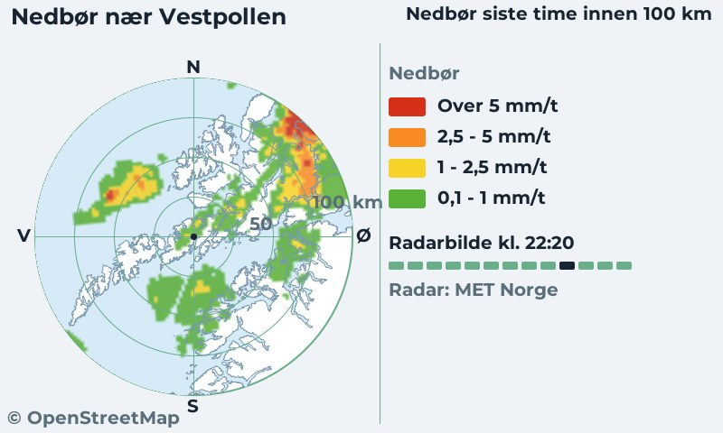
Sanntidsavganger fra Entur for buss, trikk, T-bane, tog og båt, med de to neste avgangene per linje og retning. Tavla oppdateres hvert halve minutt. Avganger uten sanntid vises svakere, og innstilte avganger merkes Innstilt. For tog står sporet.
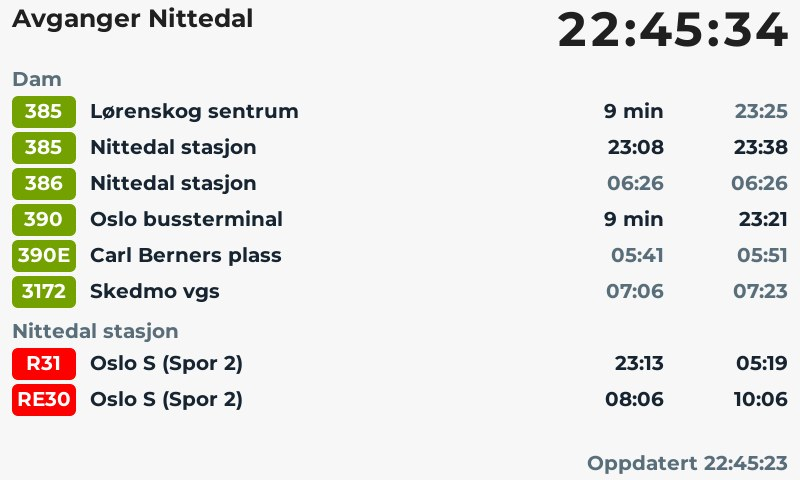
Linjene kan også samles i egne grupper, for eksempel «Til jobb» og «Hjem», på tvers av holdeplassene. Gruppene vises først på tavla, i den rekkefølgen du har lagt dem inn, og linjer uten gruppe står under holdeplassens navn som før.
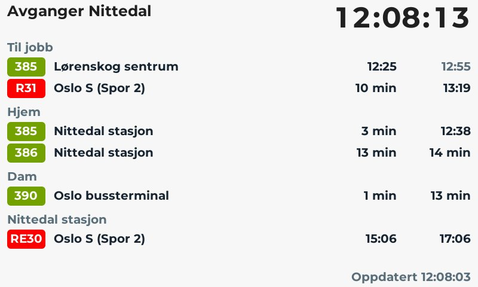
Luftkvaliteten nå og det neste døgnet fra Meteorologisk institutt, og hva som bidrar mest. Den viser også pollen av or, bjørk, gress og burot fra den europeiske modellen CAMS. Utenom sesongen står det «Ingen pollen i lufta nå».
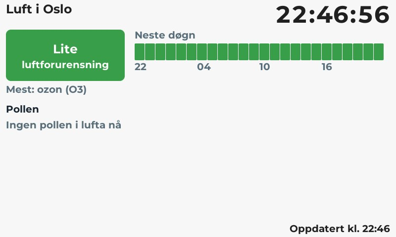
Vannstanden fra Kartverket ved den nærmeste målestasjonen. Skjermbildet viser nivået nå, om vannet stiger eller synker, og hvor mye været påvirker det. Det viser også de neste fire flo- og fjæretidene, og et diagram fra seks timer tilbake til 30 timer fram. Høydene er i cm over sjøkartnull. Inne i landet finnes det ingen data.
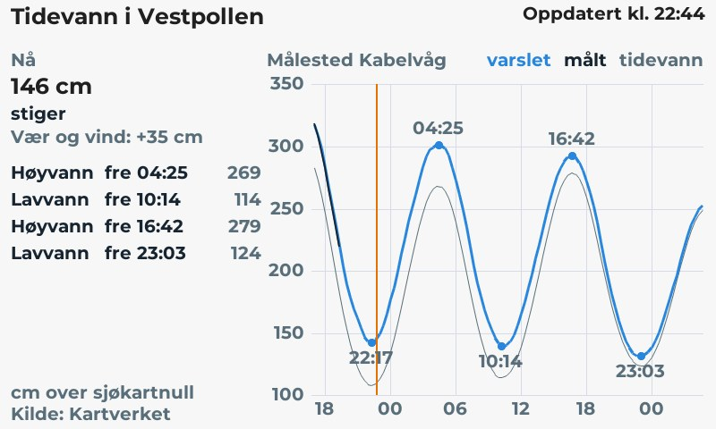
Et nærbilde fra satellittbildet over Europa rundt stedet, med en ring der stedet ligger.
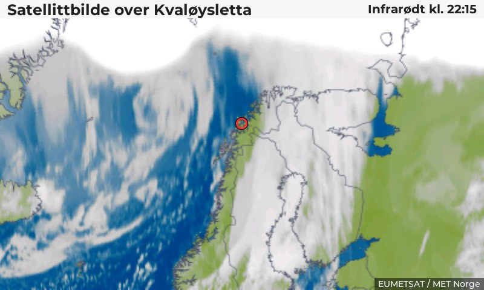
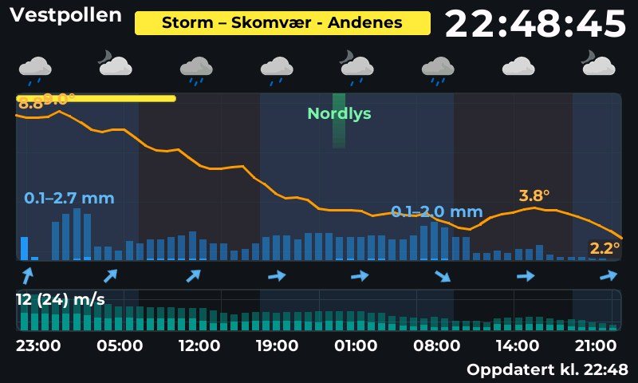
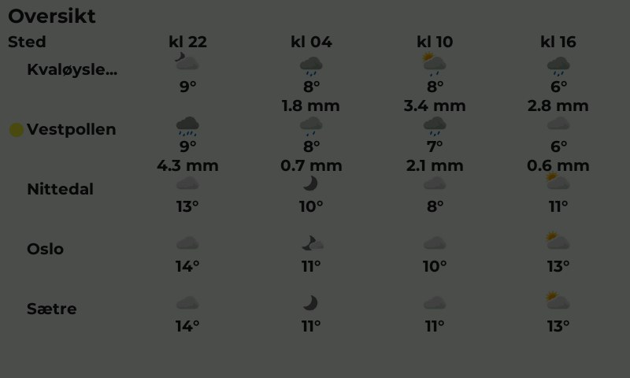
Skjermen kan bla gjennom skjermbildene selv når ingen bruker den.
Bare skjermbilder med i automatisk bytte krysset av kommer med. Et trykk stopper byttingen til skjermen har stått urørt like lenge igjen.
http://navn.local/. Har du flere skjermer, må hver ha sitt eget navn.Under Innstillinger → Tilgang og passord kan du sette et passord for oppsettsiden, bytte WiFi-nett og legge inn e-postadressen som sendes til Yr.
| Du ser | Det betyr |
|---|---|
| «Ingen WiFi» eller «Ingen internett» nede til venstre | Skjermen er uten nett, eller ingenting har kunnet hentes de siste to minuttene. Den prøver igjen av seg selv. |
| Oransje tekst nederst på et skjermbilde | Siste henting feilet, så skjermbildet viser eldre data. |
| «Klokken er ikke stilt» | Skjermen har ikke fått tiden fra nettet. Sjekk at den er på internett. |
| Nettet MultiDisplay-XXXX dukker opp | Skjermen kommer ikke på WiFi og har åpnet oppsettnettet. Koble til det og gå til http://192.168.4.1/ (se første oppstart). |
Har du glemt passordet eller byttet WiFi? Hold inne BOOT-knappen bak på skjermen mens du kobler til strømmen, så åpnes oppsettnettet.